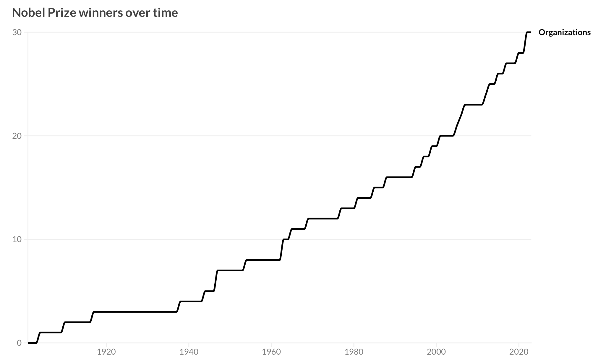
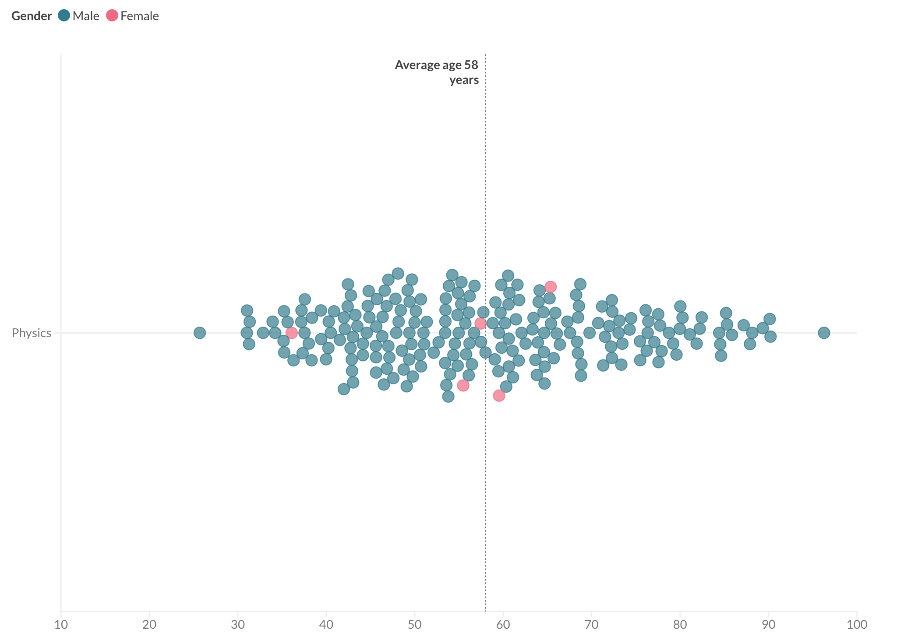
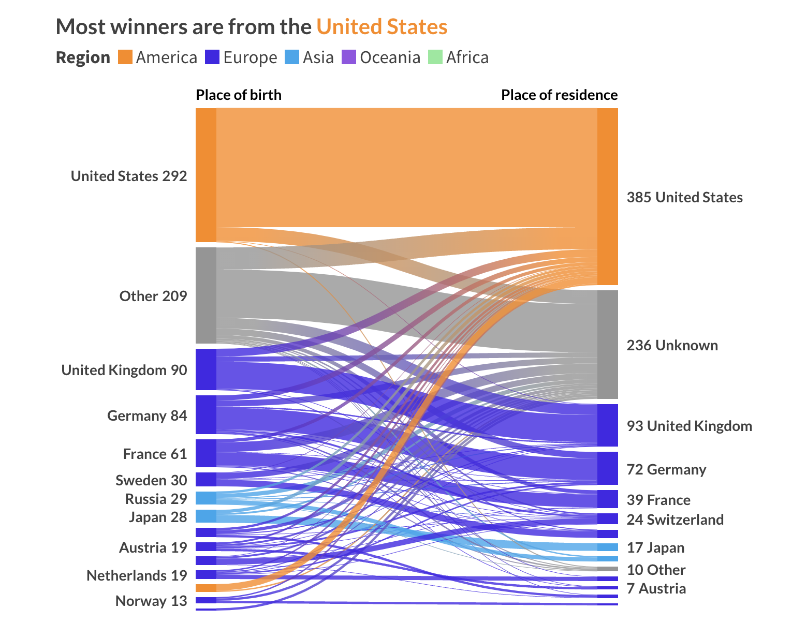

Display general statistics about the Nobel prize winners below the interactive world map.
For example, we can show the aggregation attributes of all Nobel Prize winners, such as the winner count by year:
We can also show the attribute distribution of all or a subset of Nobel Prize winners, such as the distribution of winning age:
And we can show the correlation between two attributes, such as the correlation between the birth place and the affiliation place of the Nobel Prize winners:
